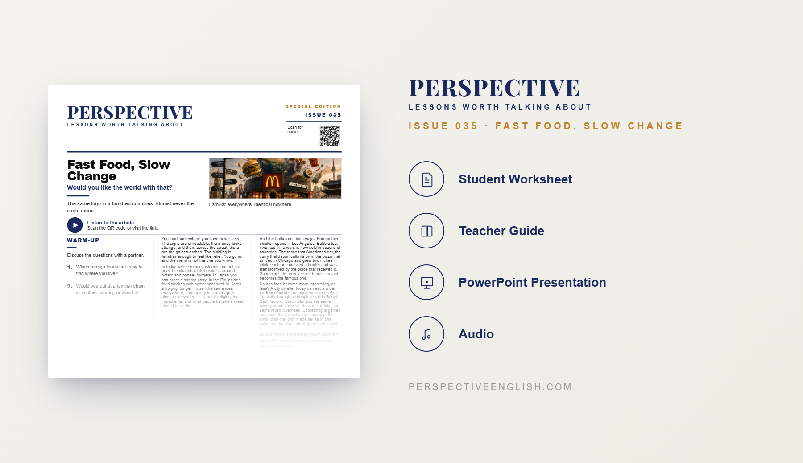

SPECIAL EDITION · ISSUE 035
Fast Food & Globalization ESL Lesson
Would you like the world with that?
A ready-to-teach ESL lesson exploring fast food, globalization, global brands, local menus, localization and food culture, with reading, listening, vocabulary, discussion and critical-thinking activities for B1–B2 English learners.
Collection 06 includes Issues 031–035.

LESSON PREVIEW

ABOUT THIS LESSON
About This Fast Food & Globalization ESL Lesson
Fast food is one of the clearest symbols of globalization. The same familiar brands can appear in Seoul, London, Tokyo, Mumbai and New York, giving travelers something they recognize even when everything else around them feels unfamiliar.
This B1–B2 Fast Food & Globalization ESL lesson explores how international food brands spread around the world while adapting to local cultures. Students examine how restaurants change menus to match local tastes, ingredients, religions and eating habits, and how foods themselves change as they cross borders.
The lesson combines an original reading and audio with vocabulary, comprehension, discussion questions and critical-thinking activities. Students use English to discuss globalization, localization, global brands, international food, cultural identity and whether the world is becoming more diverse or starting to taste the same.
FROM THE ARTICLE
WHAT'S INCLUDED
What's Included in the Fast Food & Globalization Lesson?
- Magazine-style B1–B2 ESL student worksheet
- Original fast food and globalization reading and audio recording
- Vocabulary and reading comprehension activities
- Globalization and food culture discussion questions
- Global food and localization critical-thinking activity
- Critical-thinking activities about global brands and cultural identity
- Speaking challenge and writing prompt
- Teacher guide and complete answer key
- Ready-to-use classroom presentation
GET THE COMPLETE LESSON
Ready to Teach Fast Food, Slow Change?
Get the complete Fast Food & Globalization ESL lesson individually or save with Perspective Collection 06.
Secure checkout and instant digital delivery through Payhip.